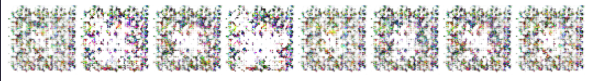

Generating Pokemon Sprites With a GAN
November 2021
- Pytorch
- Jupyter Notebooks
Repo and notebook here (sans training data).
I wanted to get some experience working with Generative Adversarial Networks to tackle another project idea I've been thinking about, since it's a model architecture I haven't used before. Bored over Thanksgiving break, I followed the PyTorch tutorial for DCGAN and swapped out their default faces dataset with a collection of Generation IV Pokemon Sprites (sourced from here) as their 64x64 image size played nice with the tutorial model's architecture.
I initially implemented the Generator and Discriminator networks, as well as the training and evaluation loop, pretty much following the tutorial. One change I made was integrating Weights & Biases, a dashboard for tracking model performance I had recently used in an NLP class, to track the losses of the models and compare the effects of different hyperparameter values.
My initial attempts were somewhat lacking -- only having access to my laptop, training took a decent bit of time. After a few hundred epochs, the Generator was producing output like this:
While the general form had begun to emerge, edges were fuzzy and certain features were far more prominent than they should be (one Pokemon present in the training data has seven forms and thus seven times the entries of any other, so its shape had far too much influence on the Generator -- see the first two cells). Furthermore, after running the training loop for a few hundred more epochs, generated output collapsed into the following consistent noise:
Another issue was that the PyTorch tutorial didn't support images with an alpha channel out of the box (hence the color backgrounds of the first row of outputs), so I modified the dataloader code to do so and bumped the number of image channels supported by each network up to 4. I also found that the Discriminator loss converged to 0 instead of the expected 0.5 (as it evaluated batches of equally real and generated data), indicating that it was learning far too quickly -- to remedy this, I decreased the batch size greatly and lowered the learning rate by a factor of 10.
This new network produced the figures below, where each row is generated output after 200 more epochs:
Now, the network was producing forms with clearer edges and expected features (limb-like protrusions) than before. As it evolved, it was interesting to see that it first learned to create a shape with little color variation, and then moved on to fleshing out the colors in later epochs. By 800 epochs, they begun to really resemble Pokemon sprites (especially if you squint), albeit with noisy color palettes.
Next Steps:
- Use PIL to manually improve the quality of generated outputs by smoothing colors, decreasing color palette, outlining edges, etc.
- Further tweak params like learning rate, batch size, etc. to help further balance Generator and Discriminator progress.
- Increase size of training data by shifting colors of, slightly changing the position of, or mirroring each element.